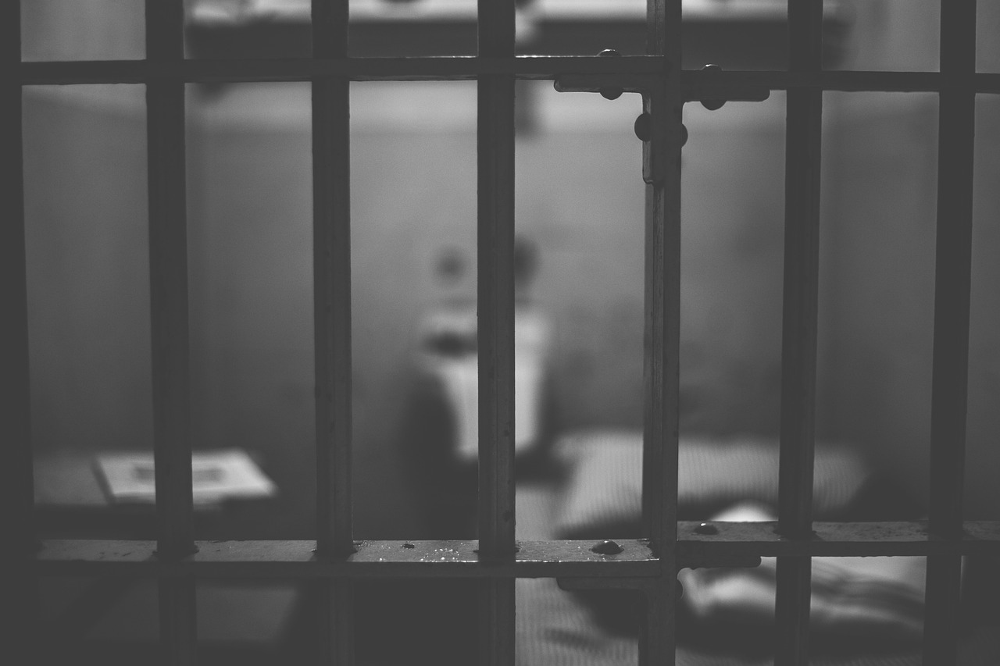

julkaistu 26.1.2025 20.16
-. Ichigo121212 / Pixabay
Kyllä, totta se on. Ei ehtinyt kulua kauaa sen jälkeen kun kirjoitin sameasta kristillisyydestä, että päädyin itse lopulta putkaan. Itseasissa, julkaisun kirjoittamisesta ehti kulua vain noin 24 tuntia, ennen kuin minut pistettiin telkien taakse. Ironista, eikö? Tässä koko myllerryksessä oli kuitenkin muutamia mielenkiintoisia pointteja joita haluaisin tässä muille kristityille jakaa, joten siksi päätän jakaa tämän hieman kiusallisenkin tarinan. Ja myös siksi, että koska kristityksi ja uudestisyntyneeksi itseäni väitän, ja lankesin itse juuri siihen ilmiöön mistä muita kritisoin, on täysin reilua että tuon omat hölmöilyni julkisuuteen kun kerran niistä muita kritisoin.
Mutta sinä varmasti mietit, kerran olet niin omistautunut Jumalalle, niin miten tässä sitten näin pääsi käymään? Rehellinen vastaukseni tuohon kysymykseen olisi, etten tiedä. En tiedä, miten onnistuin näin alas lankeamaan. Mutta sen tiedän varmaksi, että olen valtavan herätyksen tarpeessa, ja sitä asiaa koko putkareissu osittain ajoikin. Kuten jokaisen kristityn tulisi tehdä aina synkiin lankeamisen seurauksena, rukoilen Jumalalta anteeksiantoa ja käyn läpi tilannetta. Aloitetaan ihan alusta.
"Lopuksi: vahvistukaa Herrassa, ottakaa voimaksenne hänen väkevyytensä. Pukekaa yllenne Jumalan taisteluvarustus, jotta voisitte pitää puolianne Paholaisen juonia vastaan."
- Ef. 6:10-11 (KR92)
Olin heikko. Totta puhuen olen aina heikko, ja tulen aina olemaan heikko. Kun ensimmäinen houkutus illalla tuli, yritin taistella sitä omalla lihallani sen sijaan, että olisin varustanut itseni Jumalan haarniskalla. Lopputulos oli selvä: Paholaisen miekka löi läpi, ja näin ollen olinkin sitten jo juomassa.
Oli perjantai 24.1. Ilta alkoi rauhallisesti. Aloittelimme ulkona ja kiertelimme sen jälkeen parissa baarissa. Itse putkaan johtanut seikka tapahtui vasta silloin, kun lähdimme viimeisestä baarista pikku hiljaa koteihimme päin. Harhaannuin siinä kotimatkalla jossain kohtaa, kun olinkin yhtäkkiä ajautunut pieneen välikohtaukseen: satuin kulkemaan klubin ohi, kun joku heitettiin sieltä ulos. Tämä ulos heitetty mies vaati, että hän saisi hänen kamansa takaisin sisältä, jotka oli sinne jäänyt. Hän ei niitä koskaan saanut, ja menin siihen tilanteeseen väliin. Hän ei edelleenkään niitä kamoja saanut, ja kävimme sitten jututtelemassa tienvarteen pysähtynyttä poliisia. Tämän jälkeen muistikuvani tummuvat, ja sitten oleikin jo maijan takakontissa käsiraudoissa.
Sitten minut heitettiinkin putkaan. Tässä kohtaa uskoni poliisia kohtaan alkoi hiipua. Ei siis sinäänsä siinä putkassa vielä mitään vikaa ollut, vaikka se olikin klaustrofobinen kellarihuone, jossa oli ainostaan pönttö, pesuallas ja keltainen patja. Eikä sekään sinäänsä vielä minua kiinnostanut, että aina kun onnistuin nukahtamaan, poliisit tulivat potkimaan minua kyljelle. Eikä edes se, että herätessäni olin aivan jäässä ja sain odottaa peittoa arviolta 45-60 minuuttia pyynnöstä (mitään ajankäsitystä minulla ei siellä ollut, eihän siellä kuitenkaan mitään kelloa voinut olla). Ja kun viimein sain peiton, se heitettiin minulle voimalla likaisen rätin lailla luukusta herjausten kera.
Mutta kuten sanoin, nämä ovat sivuseikkoja eikä ne sinäänsä minua kiinnosta. Ongelmia minulle aiheutti vasta se, kun viimein aamulla kymmenen aikoihin pääsin piinaavasta putkasta ja sain tavarani takaisin. Ne olivat todella törkeässä kunnossa, joista pahimpana oli puhelimeni rikkinäisyys. Nyt, on kaksi vaihtoehtoa: joko olin jotenkin itse sen rikkonut (epätodennäköistä, sillä minulla oli hyvät taskut), tai sitten poliisisedät olivat sen tahalleen rikkoneet. Jälkimmäinen voi tuntua täysin absurdilta ja ymmärrän sen näkemyksen täysin, mutta poliisisedät olivat jotenkin jatkuvasti kiukkuisella tuulella ja vaikuttivat muutenkin todella patoutuneilta, enkä siksi voi tätä jälkimmäistä vaihtoehtoa täysin poissulkea.
"Ei sen, joka tekee oikein, tarvitse pelätä viranomaisia, vaan sen, joka tekee väärin. Jos siis tahdot elää pelkäämättä esivaltaa, tee oikein! Silloin saat siltä kiitosta"
- Room. 13:3 (KR92)
Rikkoivat he puhelimeni tai eivät, en sitä mitenkään pysty todistamaan. Mikä on varmaa on, että olin tehnyt väärin ja minua on siitä rangaistu. Kuulusteluissa minun vääryyksille asetettiin 10:n kappaleen päiväsakon ja 40:n euron rikosuhrimaksun mitta. Olkoon tämä nyt maksuni ulos juomisen synnistä. Jos tämä koko myllerrys ei ole tarpeaksi takomaan päätä järkeeni, niin sitten en tiedä. Tai no, rukoilla Jumalalle saan jokatapauksessa. Ja rukouksia pyytäisin teiltäkin, sillä tilanne on tällä hetkellä kriittinen, kun puhelimenikin on rikki ja talous on kurja.